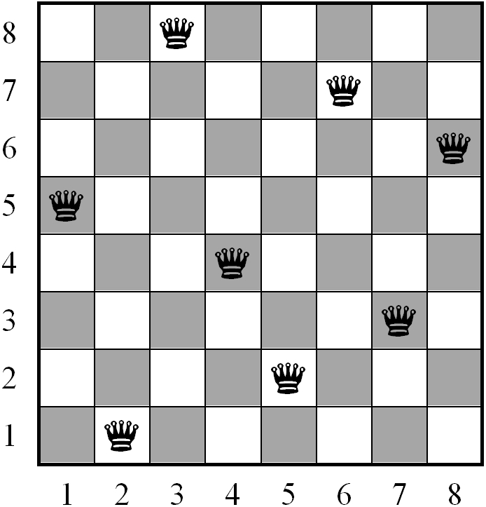
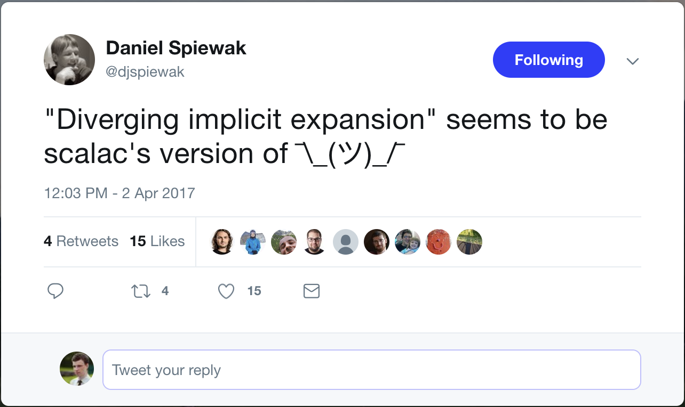

class: middle, center # Typelevel computations with Scala ### Ilya Murzinov [https://twitter.com/ilyamurzinov](https://twitter.com/ilyamurzinov) [https://github.com/ilya-murzinov](https://github.com/ilya-murzinov) .bottom[[https://ilya-murzinov.github.io/slides/scalaspb2017](https://ilya-murzinov.github.io/slides/scalaspb2017)] --- class: middle, center # Revolut --- class: middle, center # Why? ??? We love types for being able to catch errors in compile time Maybe you have heard that Scala typesystem is Turing complete, therefore, we can run arbitrary computations in compile-time It's interesting how exactly meaningful computations can be implemented and how far we go with it --- # We can do amazing things in Haskell ??? Staring with Haskell is never good, but I'll try to keep it simple There will be no mentions of Monad except this one, honestly Kyle Kingsbury Distributed system correctness --- # N queens problem  ??? Problem is to find ALL solutions for given N --- # Algorythm <img src="../../images/scalaspb2017/nqueens-algorythm.gif" height="450px" /> ??? Algorythm - recursively for every queen in row check if it's safe, then add it and move to the next row --- # What we need for solution - Natural numbers -- - Lists -- - Booleans -- - Functions -- - **The way to operate with all above** --- # Natural numbers ```scala trait Nat trait Z extends Nat trait Succ[N <: Nat] extends Nat ``` -- ```scala type _0 = Z type _1 = Succ[_0] type _2 = Succ[_1] type _3 = Succ[_2] type _4 = Succ[_3] type _5 = Succ[_4] // and so on ``` --- # Typelevel functions ```scala trait Nat { type Add[A <: Nat] } ``` -- ```scala trait Z extends Nat { type Add[A <: Nat] = A } ``` -- ```scala trait Succ[N <: Nat] extends Nat { type Add[A <: Nat] = `Succ[Z#Add[A]]` } ``` --- # Typeclasses -- ```scala def print[A](a: A)(implicit e: Encoder[A]): String = e.print(a) ``` -- ```scala scala> print(42) 42 ``` -- Deep down in some imported library: ```scala trait Encoder { // <-- typeclass def print[A](a: A) } implicit val encoder = new Encoder[Int] { def print(i: Int) = i.toString } ``` ??? This is a trivial case Scala compiler can resolve complex implicits by dividing them into simple ones Out typeclasses will not have value-level methods --- # The Add typeclass ```scala class Add[A, B] { type Out } ``` ??? Type bounds are left hereinafter Type member is like type parameter Think of it as a result and type parameters as arguments -- ```scala implicit def a0[A]: Add[`_0`, A] { type Out = A } = `???` ``` -- ```scala implicit def a1[A]: Add[A, `_0`] { type Out = A } = ??? ``` -- ```scala implicit def a2[A, B, C](implicit a: `Add[A, B] { type Out = C }` ): `Add[Succ[A], B] { type Out = Succ[C] }` = ??? ``` --- # How to use it -- ```scala def implicitly[A](implicit a: A) = a ``` -- ```scala scala> implicitly[Add[_1, _2]] scala.NotImplementedError: an implementation is missing at scala.Predef$.$qmark$qmark$qmark(Predef.scala:252) ``` -- ```scala scala> :t implicitly[Add[_1, _2]] Add[_1,_2] ``` ??? The purpose was to compile only if function can be performed This is not useful - we already know that we can add 2 naturals Result is invisible Type member is erased --- # The Aux pattern -- ```scala class Add[A, B] { type Out } object Add { type Aux[A, B, C] = Add[A, B] { type Out = C } ``` -- ```scala def apply[A, B](implicit a: Add[A, B]): `Aux[A, B, a.Out]` = ??? } ``` -- ```scala scala> :t Add[_1, _2] Add[Succ[Z],Succ[Succ[Z]]]`{type Out = Succ[Succ[Succ[Z]]]}` ``` ??? apply instead of implicitly --- # The Aux pattern ```scala implicit def dummy( implicit a: Add[_1, _2], b: Add[_3, _4], c: Add[`a.Out`, `b.Out`] ) = ??? ``` -- ```scala error: illegal dependent method type: parameter may only be referenced in a subsequent parameter section a: Add[_1, _2] ``` -- ```scala implicit def dummy[`R1`, `R2`]( implicit a: `Add.Aux[_1, _2, R1]`, b: `Add.Aux[_3, _4, R2]`, c: Add[`R1`, `R2`] ): c.Out = ??? ``` --- # The real typeclass ```scala trait Threatens[Q1 <: Queen[_, _], Q2 <: Queen[_, _]] { type Out <: Bool } object Threatens { type Aux[Q1 <: Queen[_, _], Q2 <: Queen[_, _], R <: Bool] = Threatens[Q1, Q2] { type Out = R } implicit def t0[X1 <: Nat, Y1 <: Nat, X2 <: Nat, Y2 <: Nat, EqX <: Bool, EqY <: Bool, EqXY <: Bool, DX <: Nat, DY <: Nat, EqD <: Bool]( implicit `eqX: Eq.Aux[X1, X2, EqX],` `eqY: Eq.Aux[Y1, Y2, EqY],` `or0: Or.Aux[EqX, EqY, EqXY],` `dx: AbsDiff.Aux[X1, X2, DX],` `dy: AbsDiff.Aux[Y1, Y2, DY],` `eqD: Eq.Aux[DX, DY, EqD],` `res: Or[EqXY, EqD]`): Aux[Queen[X1, Y1], Queen[X2, Y2], res.Out] = ??? } ``` --- class: center, middle # What typeclasses are required for solution? --- ```scala trait `First`[L <: List] { type Out } trait `Concat`[A <: List, B <: List] { type Out <: List } trait `ConcatAll`[Ls <: List] { type Out <: List } trait `AnyTrue`[L] { type Out <: Bool } trait `Not`[A <: Bool] { type Out <: Bool } trait `Or`[A <: Bool, B <: Bool] { type Out <: Bool } trait `Eq`[A <: Nat, B <: Nat] { type Out <: Bool } trait `Lt`[A <: Nat, B <: Nat] { type Out <: Bool } trait `AbsDiff`[A <: Nat, B <: Nat] { type Out <: Nat } trait `Range`[A <: Nat] { type Out <: List } trait `Apply`[F <: Func, A] { type Out } trait `Map`[F <: Func, L <: List] { type Out <: List } trait `MapCat`[F <: Func, L <: List] { type Out <: List } trait `AppendIf`[B <: Bool, A, L <: List] { type Out <: List } trait `Filter`[F <: Func, L <: List] { type Out <: List } trait `QueensInRow[Y <: Nat, N <: Nat] { type Out <: List } trait `Threatens`[Q1 <: Queen[_, _], Q2 <: Queen[_, _]] { type Out <: Bool } trait `Safe`[Config <: List, Q <: Queen[_, _]] { type Out <: Bool } trait `AddQueen`[N <: Nat, X <: Nat, Config <: List] { type Out <: List } trait `AddQueenToAll`[N <: Nat, X <: Nat, Configs <: List] { type Out <: List } trait `AddQueensIf`[P <: Bool, N <: Nat, X <: Nat, Configs <: List] { type Out <: List } trait `AddQueens`[N <: Nat, X <: Nat, Configs <: List] { type Out <: List } trait `Solution`[N <: Nat] { type Out <: List } ``` --- class: middle, center # Implicit resolution is a search process --- class: middle, center # -Xlog-implicits --- # Diverging implicit expansion ``` [error] somefile.scala:XX:YY: diverging implicit expansion for type T [error] starting with method m0 in class C [error] implicitly[T] [error] ^ [error] one error found [error] (compile:compileIncremental) Compilation failed ``` --- # Diverging implicit expansion  -- "A couple of years ago when I was working through some issues like this I found that the easiest way to figure out what the divergence checker was doing was just to **throw some printlns into the compiler and publish it locally.**" (c) [Travis Brown on stackoverflow](https://stackoverflow.com/questions/42178372/why-does-scalac-rise-a-diverging-implicit-expansion-error-here) --- # Diverging implicit expansion ```scala trait S trait V trait T[A] trait C[A, B] implicit def a0[A, B](implicit ta: T[A], tb: T[B]): T[C[A, B]] = ??? implicit def a1(implicit a: T[C[V, C[V, V]]]): T[S] = ??? implicit val a2: T[V] = ??? implicitly[T[C[S, V]]] ``` -- ```scala T[C[S, V]] T[S] T[C[V, C[V, V]]] // <- more complex ``` -- ```scalac [error] divexp.scala:20:13: diverging implicit expansion for type d.this.T[d.this.C[d.this.S,d.this.V]] [error] starting with method a0 in class d [error] implicitly[T[C[S, V]]] ``` --- # Shapeless to the rescue ```scala trait S trait V trait T[A] trait C[A, B] implicit def a0[A, B](implicit ta: `shapeless.Lazy`[T[A]], tb: T[B]): T[C[A, B]] = ??? implicit def a1(implicit a: T[C[V, C[V, V]]]): T[S] = ??? implicit val a2: T[V] = ??? implicitly[T[C[S, V]]] ``` --- # What to do with all this - for fun -- - programming with dependent types -- - typeclass derivations (Shapeless) --- # References - ["The Type Astronaut's Guide to Shapeless" by Dave Gurnell](https://github.com/underscoreio/shapeless-guide) -- - ["Hacking on scalac — 0 to PR in an hour" by Miles Sabin](https://milessabin.com/blog/2016/05/13/scalac-hacking/) -- - ["Typing the technical interview" by Kyle Kingsbury, a.k.a "Aphyr"](https://aphyr.com/posts/342-typing-the-technical-interview) -- - [Slides](https://ilya-murzinov.github.io/slides/scalaspb2017/) -- - [Solution of N queens problem on type level](https://scastie.scala-lang.org/ilya-murzinov/mNhJH6kdQFyfa59Vzs2OhA) --- class: center, middle # Questions? --- class: center, middle # Thanks!